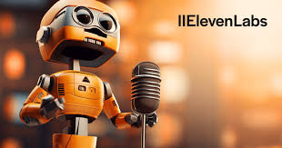

ElevenLabs.io is an American artificial intelligence company that specializes in text to speech (TTS) and voice generation, including voice cloning. Many content creators use the platform to create lifelike and high-quality AI voice overs for a wide array of projects.
Features of Elevenlabs
ElevenLabs has a ton of beginner-friendly tools that make generating AI voices easier than ever. Here’s a brief look at ElevenLabs top features:
Large voice library: ElevenLabs offers a vast library of 120+ high-quality AI voices across 29 languages and 50 accents for diverse audio projects. This includes languages such as Japanese, German, Arabic, Spanish, French, Hindi, Tagalog, Bengali, Urdu, Korean, Russian, Italian, and more. It also supports various accents, including Indian, British, Irish, American, Australian, and Canadian.
Voice customization: With ElevenLabs’ voice design tools, users can tweak the AI voices for the perfect pitch, pace, clarity, inflection, style, pronunciation, and emotion.
Voice cloning: ElevenLabs also allows users to effortlessly clone their own voice with just a 30-minute audio sample for optimal results. This enables content creators to create unlimited content with their voice without additional recording.
API access: ElevenLabs provides a text-to-speech API, allowing seamless integration of Eleven voices into various applications, extending beyond audio and video projects.
AI dubbing: ElevenLabs allows users to instantly dub and translate content into 29 languages, helping to expand their reach to a global audience.
Limitations
Pricing: ElevenLabs’ pricing structure can be a barrier for users with limited financial resources.
Limited language support: The platform supports fewer languages than its competitors, potentially limiting its usefulness for users requiring multilingual options.
Inconsistent voices: Users might experience occasional inconsistencies in voice inflections with ElevenLabs, which can detract from the naturalness and quality of the audio produced.
No mobile app: The lack of a dedicated mobile app for ElevenLabs restricts users who rely on mobile devices for their workflows or need to access the service while away from their desktops.
How ElevenLabs works
ElevenLabs offers a user-friendly platform powered by advanced speech synthesis, deep learning, and text to speech AI technology. To use ElevenLabs, I simply input or upload text, choose from a variety of voice and language options, and instantly generate humanlike speech. I can also use the platform’s editing interface to adjust the voice settings such as pitch, tone, pronunciation, volume, clarity, or stability of the voice over to suit my personal preferences. In addition to the voice library that features over 120 preset voices, I also cloned my own voice for one of the projects. This was also straightforward. I simply uploaded a small sample of my voice and hit “add voice.” I could then use this voice to create instant voice overs that sounded just like me.
ElevenLabs use cases
Since ElevenLabs offers realistic and natural-sounding voices, many users are turning to the platform instead of hiring voice actors. The ElevenLabs’ AI voices are versatile too. I could craft voice overs for anything from audio narration projects to full videos.
Here are just a few of the use cases of ways users can use AI-generated voices to unleash creativity:

Dubbing: With a wide range of languages available on the platform, ElevenLabs’ AI voices can seamlessly replace original dialogue in films or series, enabling multilingual accessibility without the need for traditional voice actors.
Audiobooks: AI-generated voices can bring written content to life and help authors produce audiobooks quickly and affordably.
Podcasts: Podcast creators can utilize ElevenLabs’ versatile voices to produce episodes, introduce new segments, or even create entirely AI-hosted shows.
Video games: Game developers can enhance character dialogue and narration, offering immersive storytelling experiences without the constraints of hiring multiple voice actors.
Customer support chatbots: ElevenLabs’ AI voices can provide natural and engaging interactions in customer service applications.
Social media content: Content creators can leverage the AI voices to produce diverse and engaging narratives for content such as TikToks and YouTube videos.
Conclusion
ElevenLabs offers a user-friendly interface, allowing even beginners to craft content with ease. In addition, users enjoy the ability to clone their voice or customize the AI-generated voices to reflect their style and personality – I know I sure did. The AI text to speech voices are also high-quality and lifelike.